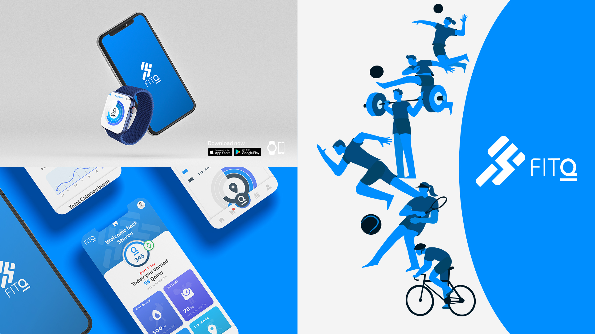

Steven Odendaal
- Bachelor of Design
- Major in Interface Design
- Minor in Computer Science
biography
Hey! I’m Steven Odendaal and I will be graduating with a Bachelor of Design majoring in Interface Design and minoring in Computer Science. I have always loved design and technology from a very young age and found it all extremely fascinating and something that I will be enjoying everyday of my life in my line of work.
I have loved design and art from a very young age, but also found myself loving technology and developing applications and programs. I knew I had a passion and deep interest in all things creative and knew that it would be the career I would pursue one day. I moved to New Zealand 3 years ago to further my life goals, so I studied here at The University of Waikato where I knew that I would be able to satisfy all my creative needs, gaining a Degree in Design and still minoring in Computer Science. I have seen myself develop and evolve my creativity here at Waikato from day one and I am grateful to get all the support and wisdom from all my lectures and peers.
project description
I set out to find ways to help improve people’s fitness and help with their overall health and mental well-being, I knew this would be the perfect challenge as kids and adults suffer very frequently from some form of mental health related issue in their lifetime and a great way to combat these mental-health issues is to do a form of exercise or physical activity but many find it difficult and challenging to keep to an exercise routine for a long period of time.
So, I created an app called FitQ, this is no ordinary fitness tracking app that you could easily download and leave sitting in your home screen for years without using, this is an App that rewards you based on your performance where you can earn an in app only currency that can be redeemed at your favourite stores that would part take with FitQ, for example, Countdown or Rebel Sport Vouchers etc. This app isn’t just for active gym goers, but also for those that prefer to partake in any form of physical recreational activity, the App is beneficial to people of all ages. Rewards can be earned via steps, calorie burning or long-distance training such as cycling. This app is not only developed to be on your phone but to be on any smart watch device as well, which can unlock more reward features as you would have it with you more frequently throughout your activities. FitQ would be the perfect app to encourage individuals to live a healthier lifestyle and be rewarded for it.
FitQ

For more information contact us
Email: degreeshow@waikato.ac.nz
Faculty phone: 0800 924 528
Faculty information: cs.waikato.ac.nz